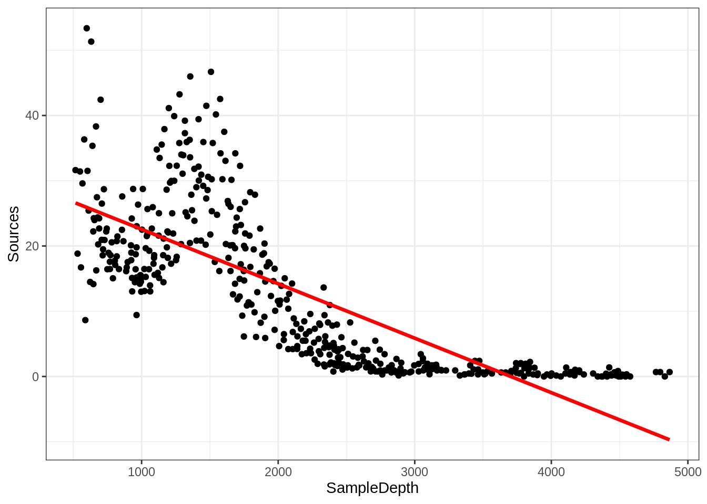

Chapitre 4 Introduction aux GAMs
Utilisons un exemple pour démontrer la différence entre une régression linéaire et un modèle additif.
Nous allons utiliser le jeu de données ISIT. Ce jeu de donnée comporte des mesures de bioluminescence en relation à la profondeur (depth), la station de rechercher et la saison (Season).
## SampleDepth Sources Station Time Latitude Longitude Xkm Ykm Month Year
## 1 517 28.73 1 3 50.1508 -14.4792 -34.106 16.779 4 2001
## 2 582 27.90 1 3 50.1508 -14.4792 -34.106 16.779 4 2001
## 3 547 23.44 1 3 50.1508 -14.4792 -34.106 16.779 4 2001
## 4 614 18.33 1 3 50.1508 -14.4792 -34.106 16.779 4 2001
## 5 1068 12.38 1 3 50.1508 -14.4792 -34.106 16.779 4 2001
## 6 1005 11.23 1 3 50.1508 -14.4792 -34.106 16.779 4 2001
## BottomDepth Season Discovery RelativeDepth
## 1 3939 1 252 3422
## 2 3939 1 252 3357
## 3 3939 1 252 3392
## 4 3939 1 252 3325
## 5 3939 1 252 2871
## 6 3939 1 252 2934Prenons que les données de la deuxième saison pour l’instant:
Commençons par essayer d’ajuster un modèle de régression linéaire à la relation entre Sources et SampleDepth. Nous pouvons utiliser la commande gam() de la librairie mgcv pour modéliser une régression par les moindres carrés. Nous verrons plus loin comment utiliser gam() pour spécifier un terme lissé et non linéaire.
##
## Family: gaussian
## Link function: identity
##
## Formula:
## Sources ~ SampleDepth
##
## Parametric coefficients:
## Estimate Std. Error t value Pr(>|t|)
## (Intercept) 30.9021874 0.7963891 38.80 <2e-16 ***
## SampleDepth -0.0083450 0.0003283 -25.42 <2e-16 ***
## ---
## Signif. codes: 0 '***' 0.001 '**' 0.01 '*' 0.05 '.' 0.1 ' ' 1
##
##
## R-sq.(adj) = 0.588 Deviance explained = 58.9%
## GCV = 60.19 Scale est. = 59.924 n = 453Le modèle linéaire explique une bonne partie de la variance de notre jeu de données (\(R_{adj}\) = 0.588), ce qui veut dire que notre modèle est super bon, non? Voyons comment notre modèle cadre avec les données:
data_plot <- ggplot(data = isit2, aes(y = Sources, x = SampleDepth)) +
geom_point() + geom_line(aes(y = fitted(linear_model)), colour = "red",
size = 1.2) + theme_bw()
data_plot
Les suppositions de la régression linéaire énumérées dans le Chapitre 4 sont-elles satisfaites dans ce cas? Comme vous l’avez peut-être remarqué, nous ne respectons pas les conditions du modèle linéaire:
- Il existe une forte relation non linéaire entre
SourcesetSampleDepth. - L’erreur n’est pas normalement distribuée.
- La variance de l’erreur n’est pas homoscédastique.
- Les erreurs ne sont pas indépendantes les unes des autres.
Comme nous l’avons brièvement mentionné au Chapitre 2, nous pouvons spécifier manuellement un modèle linéaire avec plusieurs variables prédicteurs pour essayer de prendre en compte cette réponse non linéaire. Par exemple, nous pourrions essayer de construire ce modèle linéaire avec plusieurs prédicteurs:
\[y_i = \beta_0 + \beta_1(x_{1,i}) + \beta_2(x_{2,i}) + ... + \epsilon\] Cependant, l’ajustement de ce modèle serait déterminé manuellement sur la base de décisions prises lors de la modélisation, et deviendrait rapidement difficile à utiliser. Un des grands avantages d’utiliser un GAM est que la forme optimale de la non-linéarité, i.e. le degré de lissage de \(f(x)\) est contrôlée en utilisant une régression pénalisée qui est déterminée automatiquement est déterminée automatiquement selon la méthode d’ajustement (généralement le maximum de vraisemblance ou maximum likelihood).
Nous reviendrons sur ceci un peu plus tard, mais brièvement, les GAMs sont une forme non paramétrique de la régression où le \(\beta x_i\) d’une régression linéaire est remplacé par une fonction de lissage des variables explicatives, \(f(x_i)\), et le modèle devient :
\[y_i = f(x_i) + \epsilon_i\]
où \(y_i\) est la variable réponse, \(x_i\) est la covariable, et \(f\) est la fonction lissage.
Étant donné que la fonction de lissage \(f(x_i)\) est non linéaire et
locale, l’ampleur de l’effet de la variable explicative peut varier en
fonction de la relation entre la variable et la réponse. Autrement dit,
contrairement à un coefficient fixe \(\beta x_i\), la fonction \(f\)
peut changer tout au long du gradient \(x_i\). Le degré de lissage de \(f\)
est contrôlée en utilisant une régression pénalisée qui est déterminée
automatiquement à l’aide d’une méthode de validation croisée
généralisée (GCV) de la librairie mgcv (Wood 2006).
Nous pouvons essayer de construire un modèle plus approprié en ajustant les données avec un terme lissé (non-linéaire). Dans mgcv::gam(), les termes lissés sont spécifiés par des expressions de la forme s(x), où \(x\) est la variable prédictive non linéaire que nous voulons lisser. Dans ce cas, nous voulons appliquer une fonction de lissage à SampleDepth.
##
## Family: gaussian
## Link function: identity
##
## Formula:
## Sources ~ s(SampleDepth)
##
## Parametric coefficients:
## Estimate Std. Error t value Pr(>|t|)
## (Intercept) 12.8937 0.2471 52.17 <2e-16 ***
## ---
## Signif. codes: 0 '***' 0.001 '**' 0.01 '*' 0.05 '.' 0.1 ' ' 1
##
## Approximate significance of smooth terms:
## edf Ref.df F p-value
## s(SampleDepth) 8.908 8.998 214.1 <2e-16 ***
## ---
## Signif. codes: 0 '***' 0.001 '**' 0.01 '*' 0.05 '.' 0.1 ' ' 1
##
## R-sq.(adj) = 0.81 Deviance explained = 81.4%
## GCV = 28.287 Scale est. = 27.669 n = 453La variance expliquée par notre modèle a augmenté de plus de 20% (\(R_{adj}\) = 0.81)! Lorsque nous comparons l’ajustement des modèles linéaire (rouge) et non linéaire (bleu), il est clair que ce dernier cadre mieux avec nos données:
data_plot <- data_plot + geom_line(aes(y = fitted(gam_model)),
colour = "blue", size = 1.2)
data_plot
Rappel: Contrairement à un coefficient fixe \(\beta\), la fonction de lissage peut changer tout au long du gradient \(x\).
La librairie mgcv comprend également une fonction plot qui, par
défaut, nous permet de visualiser la non-linéarité du modèle.
4.1 Test de linéarité
Comment tester si le modèle non linéaire offre une amélioration significative par rapport au modèle linéaire?
On peut utiliser gam() et AIC() pour tester si une supposition de linéarité est justifiée. Pour ceci, on peut comparer la performance d’un modèle linéaire contenant x comme prédicteur linéaire à la performance d’un modèle non linéaire contenant s(x) comme prédicteur lisse. En d’autres termes, on demande si l’ajout d’une fonction lisse au modèle linéaire améliore l’ajustement du modèle à nos données.
Comment utilisons-nous les GAMs pour savoir si un modèle linéaire est
suffisant pour modéliser nos données?
linear_model <- gam(Sources ~ SampleDepth, data = isit2)
smooth_model <- gam(Sources ~ s(SampleDepth), data = isit2)
AIC(linear_model, smooth_model)## df AIC
## linear_model 3.00000 3143.720
## smooth_model 10.90825 2801.451Ici, l’AIC du GAM lissé est plus bas, ce qui indique que l’ajout d’une fonction de lissage améliore la performance du modèle. La linéarité n’est donc pas soutenue par nos données.
Pour expliquer brièvement, le critère d’information d’Akaike (AIC) est une mesure comparative de la performance d’un modèle, où des valeurs plus basses indiquent qu’un modèle est “plus performant” par rapport aux autres modèles considérés.
4.2 Défi 1
Essayons maintenant de déterminer si les données enregistrées lors de la première saison doivent être modélisées par une régression linéaire ou par un modèle additif. Répétons le test de comparaison avec gam() et AIC() en utilisant les données de la première saison seulement:
- Ajustez un modèle linéaire et un GAM à la relation entre
SourcesetSampleDepth. - Déterminez si l’hypothèse de linéarité est justifiée pour ces données.
- Quels sont les degrés de liberté effectifs du terme non-linéaire?
Nous n’avons pas encore discuté des degrés de liberté effectifs (EDF), mais ils sont un outil clé pour nous aider à interpréter l’ajustement d’un GAM. Gardez ce terme en tête. Plus sur ce sujet dans les prochaines sections!
4.2.1 Défi 1: Solution
1. Ajustez un modèle linéaire et un GAM à la relation entre Sources et SampleDepth.
linear_model_s1 <- gam(Sources ~ SampleDepth, data = isit1)
smooth_model_s1 <- gam(Sources ~ s(SampleDepth), data = isit1)2. Déterminez si l’hypothèse de linéarité est justifiée pour ces données.
Comme ci-dessus, la visualisation de la courbe du modèle sur notre ensemble de données est une excellente première étape pour déterminer si notre modèle est bien conçu.
ggplot(isit1, aes(x = SampleDepth, y = Sources)) + geom_point() +
geom_line(colour = "red", size = 1.2, aes(y = fitted(linear_model_s1))) +
geom_line(colour = "blue", size = 1.2, aes(y = fitted(smooth_model_s1))) +
theme_bw()
On peut compléter cela par une comparaison quantitative des performances du modèle en utilisant AIC().
## df AIC
## linear_model_s1 3.000000 2324.905
## smooth_model_s1 9.644938 2121.249Le score AIC moins élevé indique que le modèle lissé est plus performant que le modèle linéaire, ce qui confirme que la linéarité n’est pas appropriée pour notre ensemble de données.
3. Quels sont les degrés de liberté effectifs du terme non-linéaire?
Pour obtenir les degrés de liberté effectifs, il suffit d’imprimer notre objet du modèle:
##
## Family: gaussian
## Link function: identity
##
## Formula:
## Sources ~ s(SampleDepth)
##
## Estimated degrees of freedom:
## 7.64 total = 8.64
##
## GCV score: 32.13946Les degrés de liberté effectifs (EDF) sont >> 1. Gardez cela à l’esprit, car nous reviendrons bientôt sur ceux-ci!
Réferences
Wood, S. N. 2006. Generalized Additive Models: An Introduction with R. 2nd ed. Chapman; Hall/CRC.